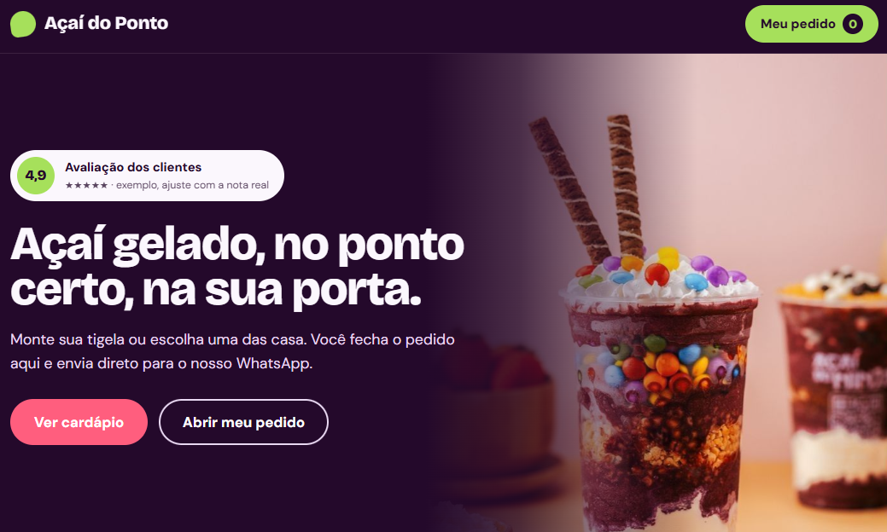

Açaíteria
Açaí do Ponto
Cardápio digital profissional em que o cliente monta o pedido no site e envia direto para o WhatsApp da loja. Roxo profundo, verde-limão e rosa dão energia à marca.

O que entregamos
- Cardápio com produtos e tigelas da casa
- Carrinho “Meu pedido” sempre visível no topo
- Pedido enviado pronto para o WhatsApp
- Selo de avaliação dos clientes
- Foto de produto em destaque no topo
Identidade do projeto
Tipografia: Sem serifa forte e compacta, com muito peso nos títulos.
“Açaí gelado, no ponto certo, na sua porta.”
Frase de abertura do site.